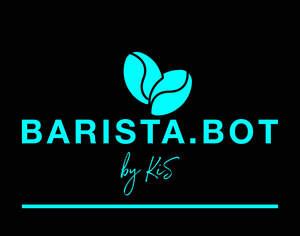

Trade Mark Journal No.2025/049 5 December 2025
UK00004253896 25 August 2025 (7,11,30,43)

- Class 7
- Vending machines; Refrigerated vending machines; Vending machines (Counter operated -); Automatic dispensing [vending] machines; Automatic vending machines; Automated vending machines; Beverage processing machines; Beverage making machines; Tea processing machines.
- Class 11
- Coffee machines; Coffee machines, electric; Electric coffee machines; Coffee brewers, electric; Coffee brewers (Electric -); Electric coffee brewers; Coffee makers; Electric coffee makers; Coffee makers, electric.
- Class 30
- Coffee; Coffee beverages; Coffee drinks; Beverages with coffee base; Beverages with a coffee base; Ice beverages with a coffee base; Coffee beverages with milk; Iced coffee; Coffee based beverages; Chocolate coffee; Coffee based drinks; Coffee in whole-bean form; Beverages made from coffee; Beverages made of coffee; Prepared coffee and coffee-based beverages; Coffee flavorings; Flavoured coffee; Prepared coffee beverages; Aerated beverages [with coffee, cocoa or chocolate base]; Coffee essences for use as substitutes for coffee; Decaffeinated coffee; Coffee beans; Aerated drinks [with coffee, cocoa or chocolate base]; Coffee flavourings; Caffeine-free coffee; Cappuccino; Instant coffee; Beverages based on coffee; Ground coffee; Coffee in brewed form; Tea beverages.
- Class 43
- Coffee shops; Coffee shop services; Drink dispensing machines (rental of); Rental of drink dispensing machines; Coffee bar services; Leasing of coffee makers; Rental of beverage fountains; Coffee supply services for offices [provision of beverages]; Self-service cafeteria services.
Kasun Siriwardana